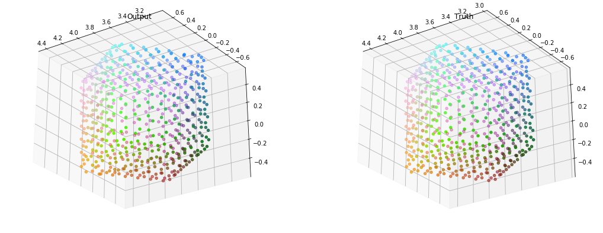

Phase 2: Cube encoding
Graph
The test object is simple, it is a cube
Checkpoint 1: GCNs
Conclusion: GCNs fail to learn sharp edges
Other graph convs!
Specs:
- Layers: 3-32-32-32-3
- Activation: Leaky relu
- Loss: MSE + MAE
- SAGEm: SAGEconv with mean aggregation
- SAGEl: SAGEconv with LSTM aggregation
- SAGEg: SAGEconv with GCN aggregation
- Edge: Edgeconv
- Attention: Graph attention network, 1-head

Loss
Closer look at loss
SAGEConv
SAGEm loss: 0.004168

SAGEg loss: 0.01587
SAGEl loss: 0.005061
EdgeConv

Edge loss: 0.005223
Graph attention networks

GAT loss: 0.02380
Edge and sageM was able to do the trick
Pushing limits
Test limits and ability of network architecture
Specs:
- Activation: Leaky relu
- Loss: MSE + MAE
- SAGEm: SAGEconv with mean aggregation
- Edge: Edgeconv
- Test: 3-32-16-4-1-3 [features]
- Narrow: 3-32-3
- Equal: 3-3-3-3-3
Loss
Equals (3-3-3-3-3)

Equal Loss
edge
sagem
Narrows (3-32-3)

Narrow Loss

edge

sagem
Test (3-32-16-4-1-3)

Test Loss
edge
sagem
I think edge seems to be the best convolution.
Combinations with dense
Test limits and ability of network architecture
Try max pool?
Specs:
- Activation: Leaky relu
- Loss: MSE + MAE
- Conv: Edgeconv
- Identity: 3x588-1764,no activation
- Simple: 3x588-1x588-588-1764
- Try: 3x588-3x588-1x588-256-256-512-1024-1764